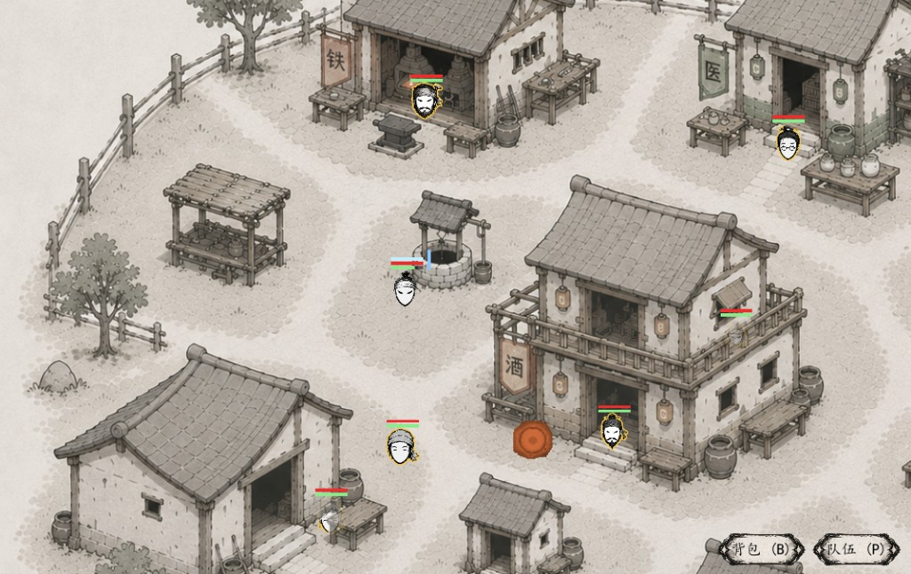
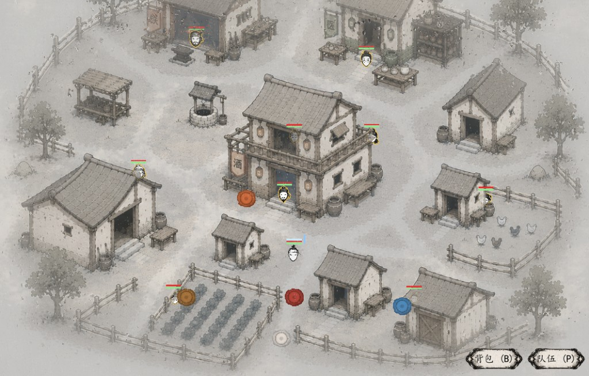
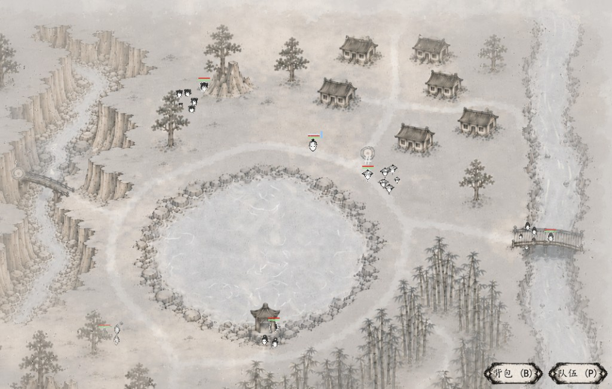
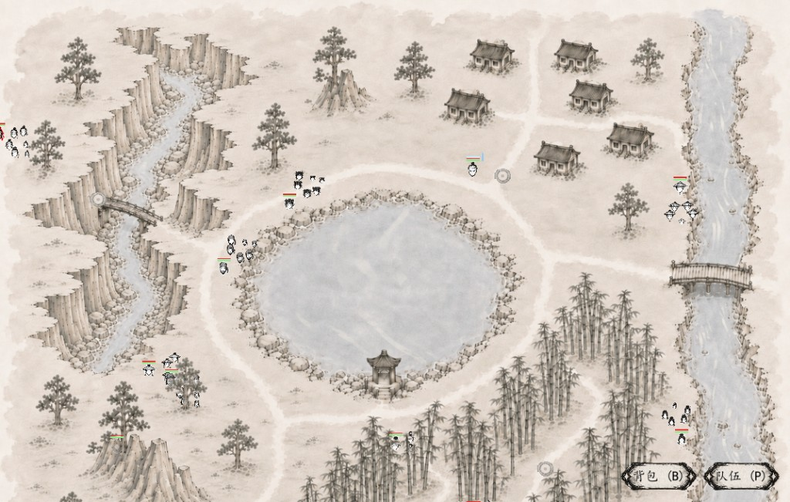
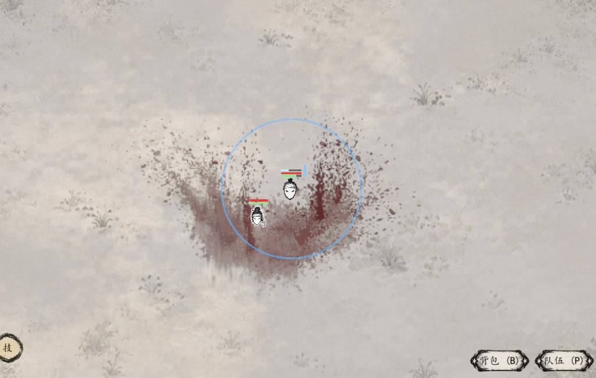

《剑客与权臣》是一款水墨风武侠 RPG。探索方式受到《废都物语》的启发：你会在地图中查看地点、触发事件、与人交谈，并一点点发现新的去处。进入战斗后，则通过类似《水果忍者》的滑动操作直接挥刀斩击。
游戏围绕「一人成军，还是合纵连横」展开。你可以把资源集中在自己身上，独自应对旅途；也可以招募同伴、搭配装备，让不同的人一起上阵。这里没有预设的正确答案，只有不同的走法。
这是一个由我独立制作、仍在慢慢完善的项目。目前雨天氛围与战斗中的血迹表现相对完整，其他内容也会随着开发继续调整。

一人成军，还是合纵连横？
个人开发中在地图上寻找道路与线索，用手中的刀解决迎面而来的危险。独自变强，还是结伴同行，由你选择。
《剑客与权臣》是一款水墨风武侠 RPG。探索方式受到《废都物语》的启发：你会在地图中查看地点、触发事件、与人交谈，并一点点发现新的去处。进入战斗后，则通过类似《水果忍者》的滑动操作直接挥刀斩击。
游戏围绕「一人成军，还是合纵连横」展开。你可以把资源集中在自己身上，独自应对旅途；也可以招募同伴、搭配装备，让不同的人一起上阵。这里没有预设的正确答案，只有不同的走法。
这是一个由我独立制作、仍在慢慢完善的项目。目前雨天氛围与战斗中的血迹表现相对完整，其他内容也会随着开发继续调整。
「一个人把刀练到极致，还是找到值得并肩的人？」




查看地点、触发事件、寻找线索。通过简洁的地图交互，一步步打开村庄与村外的道路。
战斗不需要记复杂的招式表。看准敌人，用滑动操作挥刀斩击，直接感受命中与血迹反馈。
把自己练成一支军队，或招募同伴、搭配队伍。资源和机会有限，你的选择会形成不同的成长路线。
雨天改变村庄和野外的气氛，血迹记录刚刚发生的战斗。这两部分也是目前美术表现较完整的内容。